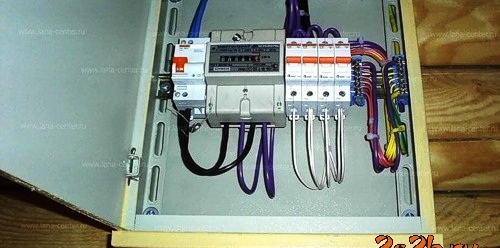

Качественный электромонтаж в Санкт-Петербурге и ленобласти, стаж 12 лет. Частный электрик, недорого и качественно.
Тел. 8 904 642 08 57 Николай.

Установить розетку на бревно, цены.
Статья расскажет об основных этапах установки одного из основных элементов электрической сети – розеток.
Розетка в современном доме или квартире – это один из основных элементов электрической проводки, от качества и работоспособности которого зависит возможность использования любых электрических приборов. Однако время от времени розетки выходят из строя и нуждаются в замене. В таком случае, лучше всего, конечно, обратиться за помощью к квалифицированному электрику, однако при наличии определенных знаний любой потребитель такую работу сможет без труда провести и самостоятельно.
Первым делом хотелось бы сказать о правильном выборе розеток. Стоит обращать свое внимание только на продукцию всемирно известных брендов, которые гарантируют высокое качество товара и его полную безопасность. Если же говорить о технических характеристиках устройства, то принятым стандартом являются шестиамперные модели с круглыми гнездами. Отступать от этого стандарта не стоит.
Сколько стоит монтаж розетки в бревно?
|
Количество розеток в штуках. |
Цена в руб. за установку 1 розетки. |
|
До 10 штук. |
300 |
|
15 |
270 |
|
20 |
240 |
|
До 25 штук. |
220 |
|
30 |
210 |
|
До 40 штук. |
200 |
|
От 40 штук. |
180 |

Работу следует начать с выключения отключения электрической энергии на щитке, ведь в ином случае Вы можете получить удар электрическим током. Перед проведением каких-либо манипуляций обязательно необходимо удостовериться в том, что розетка обесточена. Работу следует начинать в дневное время суток, ведь если на улице стемнеет, то Вам придется работать с фонариком, что вовсе неудобно.
Проще и быстрее всего проводится работа в том случае, если Вам просто нужно заменить старую вышедшую из строя розетку на новую. В таком случае гнездо под ее установку и провода у Вас уже есть, поэтому работа сводится к тому, что необходимо аккуратно выкрутить старое изделие и по той же схеме установить на его место новое.
Если же Вы прокладываете новую проводку, то попотеть придется больше. Сначала в стене нужно проделать гнездо. Проделать его проще всего при помощи дрели, оснащенной специальной коронкой для проделывания круглых отверстий (если стены произведены из железобетона или кирпича, то вместо дрели следует использовать перфоратор). Также от гнезда к плинтусу, из которого выходит провод, проделывается специальная штроба. Ее проще всего сделать при помощи зубила. Сами же провода для подводки к розетке желательно проложить с запасом на 8-9 см, а зачищать их рекомендуется на длину не более 1 см.
После этого в подготовленное гнездо вставляется специальная монтажная коробка. Зафиксировать ее можно при помощи алебастра или гипса. Для этого проделанную канавку нужно промазать этим материалом, после чего зафиксировать на нем саму коробку. После застывания гипса или алебастра коробка прикручивается к стенам при помощи дюбелей.
Следующий этап – это подключение проводов к клеммам в розетке и ее фиксация в коробке. Для фиксации в конструкции изделия предусмотрены специальные ножки, которые зажимают устройство в проеме при закручивании саморезов. Как правило, крепится изделие при помощи двух саморезов, закручивать которые нужно по очередности для того, чтобы розетку не перекосило.
Таким образом, установку розетки можно провести и самостоятельно, однако если Вы никогда раньше не занимались таким делом, то все же лучше обратиться к профессиональному электрику.

Сколько будут стоить материалы.
Замена электропроводки в панельном доме.
Расценки на электропроводку квартир.
Сколько стоит замена электропроводки в двухкомнатной квартире?.
Сколько стоит проложить проводку в 3 ком квартире?
Сколько стоит проложить проводку в четырехкомнатной квартире?
Сколько стоит сделать внутреннюю проводку?.
Установка люстр и светильников.
Замена электропроводки в панельном доме.
Электромонтаж проводов в бане.